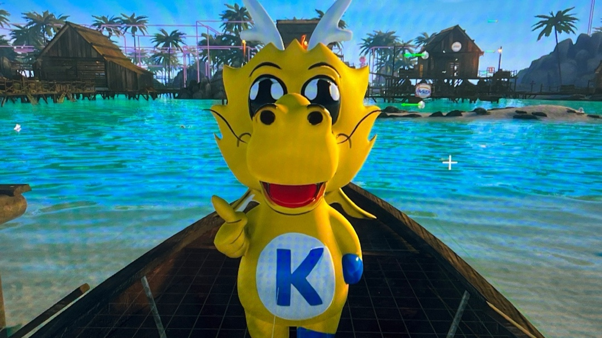
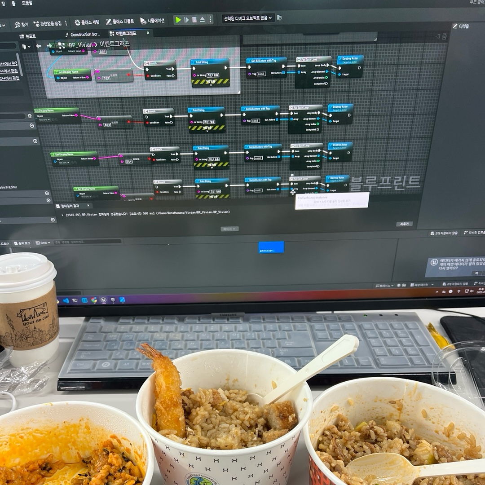
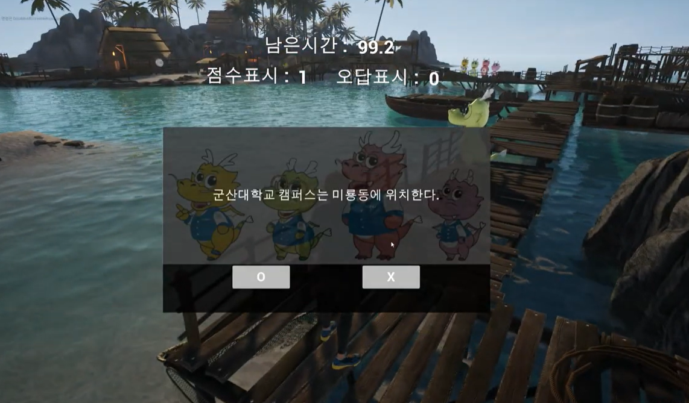
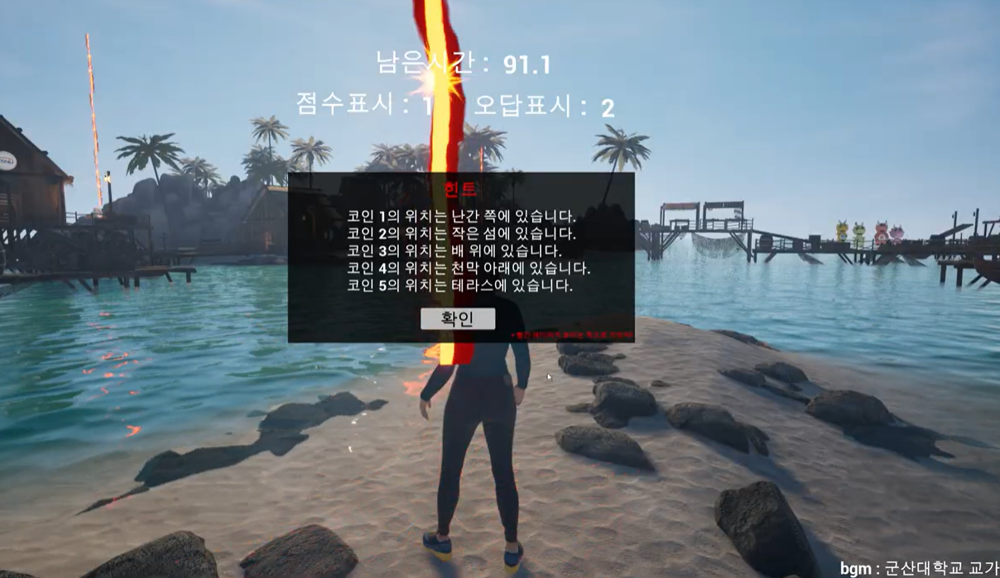
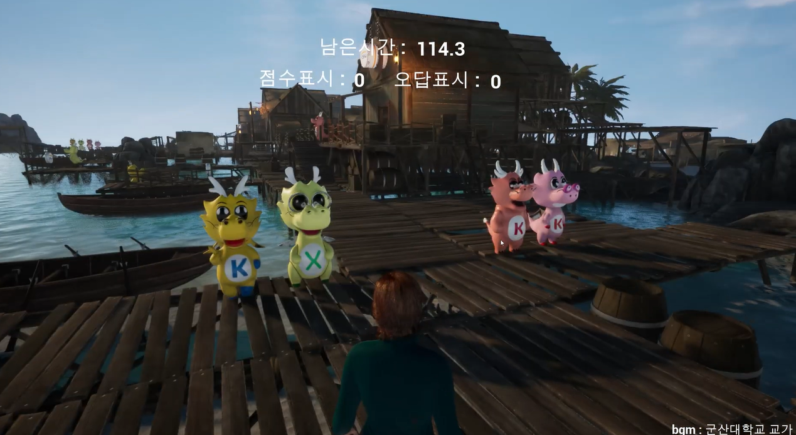
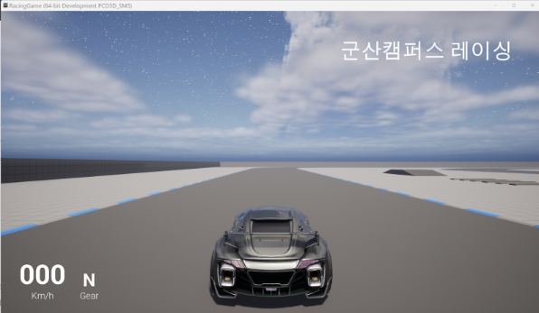

< 6일차 >
6일차 오전엔 5일차와 동일하게 궁금했던 기능에 대해 설명하는 시간이었다.
👩💻내일 모레가 발표라서 나는 수업 안 듣고 엔진 구현에만 집중했다.
우선, 코인 얻기 게임의 가장 중요한 🪙코인🪙을 제작했다.
📍Sketchfab📍에서 코인 모델을 불러와서 우리 군산대학교 로고를 머티리얼로 입혔다.
그리고 캐릭터가 코인에 Overlap하면 코인이 사라지고 점수가 1 오르도록 구현했다.🤐
이 이후엔 여러 ✨팝업창✨을 만들어내야했다.
🔍게임 설명 팝업창, 게임 시작 팝업창, 게임 오버 팝업창, 게임 클리어 팝업창,
타이머 표시 팝업창, 점수 표시 팝업창, 오답 표시 팝업창, 퀴즈 팝업창(5개)를 만들기 시작했다.🔍
정말 팝업창 만들기 달인이 된 것만 같았다..ㅎㅎ😅
완성된 팝업창들을 레벨 블루프린트에 넣어줬다.
😥이제 각 팝업창들의 이벤트를 설정해주는데 여기서 많이 막혔었다.ㅜㅜ
강사님께 질문해서 겨우 해결했지만 시간이 얼마 남지 않아서
오늘은 수업이 끝나도 남아서 계속 작업했다.🌆

⏰게임 시작 팝업창의 확인 버튼을 누르면 타이머 팝업창의 시간이 점점 줄고,
시간이 끝나면 게임 오버 팝업창이 뜬다.
코인을 먹으면 퀴즈 팝업창이 뜨고 퀴즈를 맞추면 점수 팝업창의 숫자가 올라가며,🔢
틀리면 오답 팝업창의 숫자가 올라간다.☺️

< 7일차 >
7일차 오전엔 어제 하다가 만 팝업창 작업을 마무리하고,🔍
🪙코인 5개를 맵 내에 여기저기 숨겼다.
강사님께 중간검사를 맡았는데 코인 찾기가 너무 어려워서 나같으면 이 게임 지루해서 안 한다고 하셨다.🫨
충격 먹고 바로 힌트 팝업창을 만들고 친구는 에셋스토어에서 🎇파티클 효과🎇를 찾아와서
키보드 1키를 누르면 힌트 팝업창이 뜨면서 레이저가 코인 위에서 발사되도록 구현했다.

그리고 게임 시작하면 군산대학교 교가가 bgm으로 나오도록 설정했다.🎶
친구가 찾아온 게임 시작 및 오버 효과음과 코인 먹는 효과음도 가져와서 상황에 맞게 입혔다.
📍군산대학교 마스코트📍도 3D 모델로 뽑아와줘서 맵 내에 마스코드 동상을 배치하여 꾸몄다.
여러번 게임을 실행해보면서 오류를 고치고 개선했다.👩🔧
🧾게임을 다 완성하고 내일 발표와 함께 제출해야 할 결과 보고서와 기타 서류들을 작성했다.😉
< 8일차 >
8일차엔 내가 PPT 제작과 게임 시연을 맡고, 친구가 발표를 맡기로 했다🧑🎤.
친구가 대본을 써야해서 얼른 PPT를 다 만들고 친구에게 넘겨줬다.
🎬대본을 쓰는 동안 나는 게임 시연 영상을 찍어서 제출했다.
발표까지 남는 시간에 친구와 발표 대사에 게임 시연 동작을 맞춰보기를 반복했다.
그 모습을 보던 강사님께서 너무 보기 좋다고 칭찬해주셨다.🥰
발표 시간이 되고 앞 팀들의 발표를 보는데 내가 다 긴장되었다.
게다가 강사님께서 촬영까지 하셔서 유튜브에 올린다고 했었어서 더욱 떨렸다.😖
우리 팀 차례가 되어서 나는 컴퓨터 앞에 앉아서 친구 발표에 맞춰 캐릭터를 움직였다.
몇번이고 연습을 반복했었어서 다행히 실수는 없었다.
🎁모든 팀의 발표가 다 끝나고 강사님께서 2팀에게 스타벅스 쿠폰을 주시겠다고 하셨다.
설마 우리팀이겠어 하고 기다리는데 🥇1등🥇에 내 이름과 친구 이름이 적혀있어서 너무 놀랐다.
게임 엔진의 퀄리티보단 친구가 발표를 너무 잘 해줘서 상을 받았다고 생각한다.
게임을 만드는 동안 힘든 일이 많았지만, 결과적으로는 너무 행복했다.🥰

< 9일차 >
9일차엔 수료식 및 사진 촬영이 있었다.📷
강사님께서 한명한명에게 수료증을 주시고, 개인 사진 및 단체 사진을 찍었다.
🎖️수료식이 끝나고 괜찮은 사람들에게만 개인 인터뷰 영상을 찍어서 유튜브에 올리신다고 하셨다.
누가 할까? 라는 생각을 하고 있는데 강사님께서 상품을 거니까 여러 사람들이 지원했다.
강사님께서 지금까지 배운 수업 내용들을 정리해서 구글 공유 드라이브 폴더에 올려주셨다.
인터뷰를 찍는 동안 나는 나중에 써먹을 일이 있겠지하고 사본 뽑아서 내 드라이브에 저장해뒀다.👨💻

이미 수료식이랑 프로젝트도 끝났고 오늘 내일은 📍유니티📍에 대해서 잠깐 맛보기로 배운다고 하셨다.
그래서 유니티를 설치하고 사전에 강사님께서 만들어둔 PPT를 참고하며 수업을 이어나갔다.
유니티는 언리얼 엔진과는 다르게 C#을 사용하여 스크립트를 짜야했다.
언리얼에서 블루프린트 짜는 것도 힘들었는데 C#은 더더더더 어려웠다.😰
☺️유니티로 밤송이를 던져서 과녁판에 맞추는 게임을 만들었는데 허접하면서도 귀여웠다.

< 10일차 >
10일차엔 언리얼 엔진으로 비히클 프로젝트를 새로 만들어서 레이싱 게임을 만들었다.🚗
이미 자동차의 가속도나 브레이크, 입력키 등등이 다 짜여져 있는 프로젝트여서 할 게 없었다.
UI로 군산캠퍼스 레이싱을 화면에 띄우고 바로 빌드를 해봤다.
발표하는 날에도 빌드해봤어서 이제 빌드는 식은 죽 먹기이다.☺️
근데 더 나아가서 빌드한 후에 게임이 언리얼 로고로 저장되는데 이걸 다른 걸로 바꿔보는 것을 배웠다.
😯다른 게임들도 이런식으로 로고를 바꾸는구나 싶어서 신기했다.